Введение в HTML
HTML (HyperText Markup Language) — это основной язык разметки для создания структурированного контента для веба. Он использует специальные теги для обозначения различных элементов и их взаимосвязей. HTML не является языком программирования, а представляет собой язык разметки, который позволяет создавать статические и динамические веб-страницы.
История HTML
HTML был разработан в начале 90-х годов Тимом Бернерсом-Ли, создателем Всемирной паутины (WWW). Первая версия HTML, вышедшая в 1993 году, уже имела много полезных функций, однако с тех пор язык прошёл через несколько значительных обновлений. На данный момент используется HTML5, который добавляет множество новых элементов и атрибутов, позволяя строить более мощные и интерактивные веб-приложения.

Структура HTML-документа
Стандартный HTML-документ имеет чёткую структуру. Вот базовый пример:
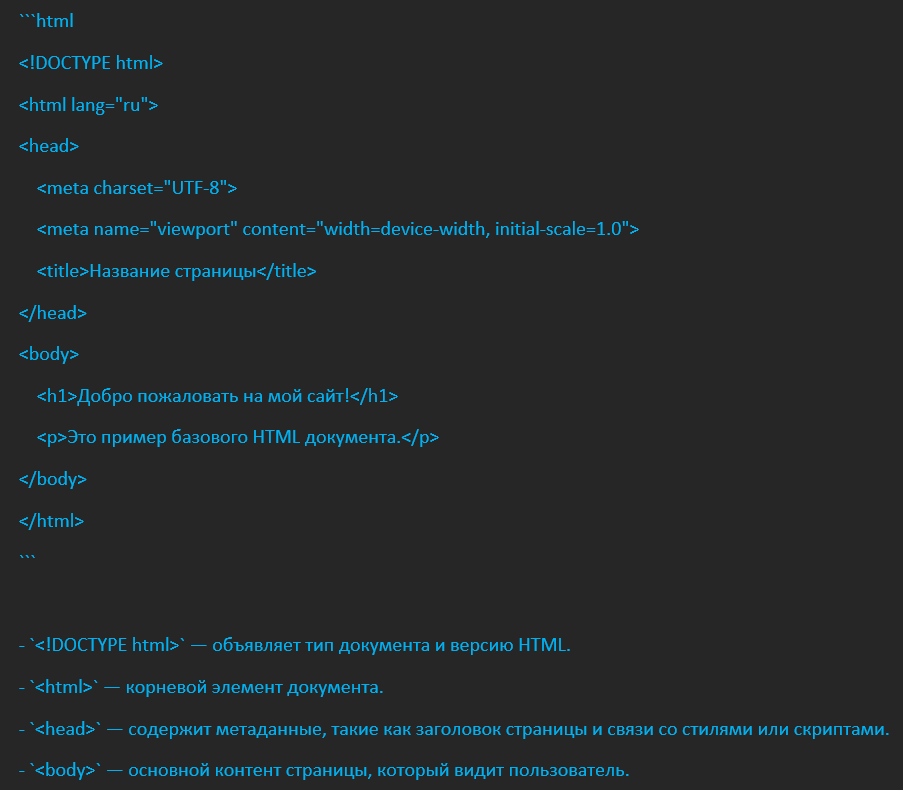
Основные HTML-теги
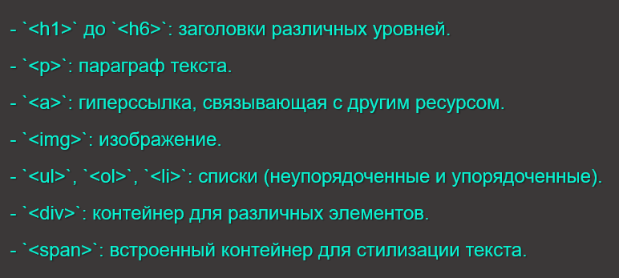
Семантические теги HTML5
HTML5 предоставляет дополнительные семантические теги, которые помогают структурировать контент более логично. Они придают значения различным разделам страницы, улучшая её читаемость как для разработчиков, так и для поисковых систем.
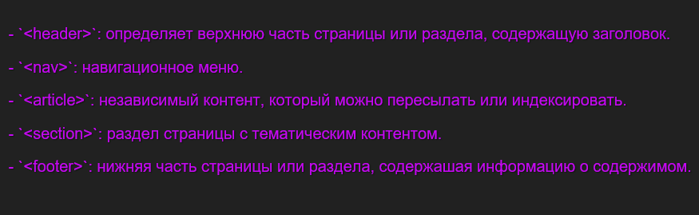
Введение в CSS
CSS (Cascading Style Sheets) — каскадные таблицы стилей, которые позволяют управлять визуальным отображением HTML-страниц. С помощью CSS можно задавать стили для различных элементов, включая шрифты, цвета, размеры и расположение.
История CSS
CSS был разработан в 1996 году как способ раздельной работы с контентом и его представлением. Как и HTML, CSS прошел несколько обновлений, что позволило улучшить возможности стилизации. В настоящее время мы используем CSS3, который сильно расширяет функциональность, добавляя новые возможности для анимации, градиентов и медиа-запросов.
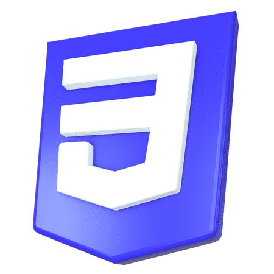
Основы CSS
CSS позволяет контролировать внешний вид ваших веб-страниц посредством правил. Каждое правило состоит из селектора и деклараций:
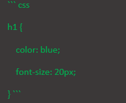
- **Селектор** (`h1`) определяет, к каким элементам применяется правило. - **Декларации** (`color: blue; font-size: 20px;`) определяют, какие свойства и значения будут применены.
Способы подключения CSS
Существует три основных способа подключения CSS к HTML-документу:
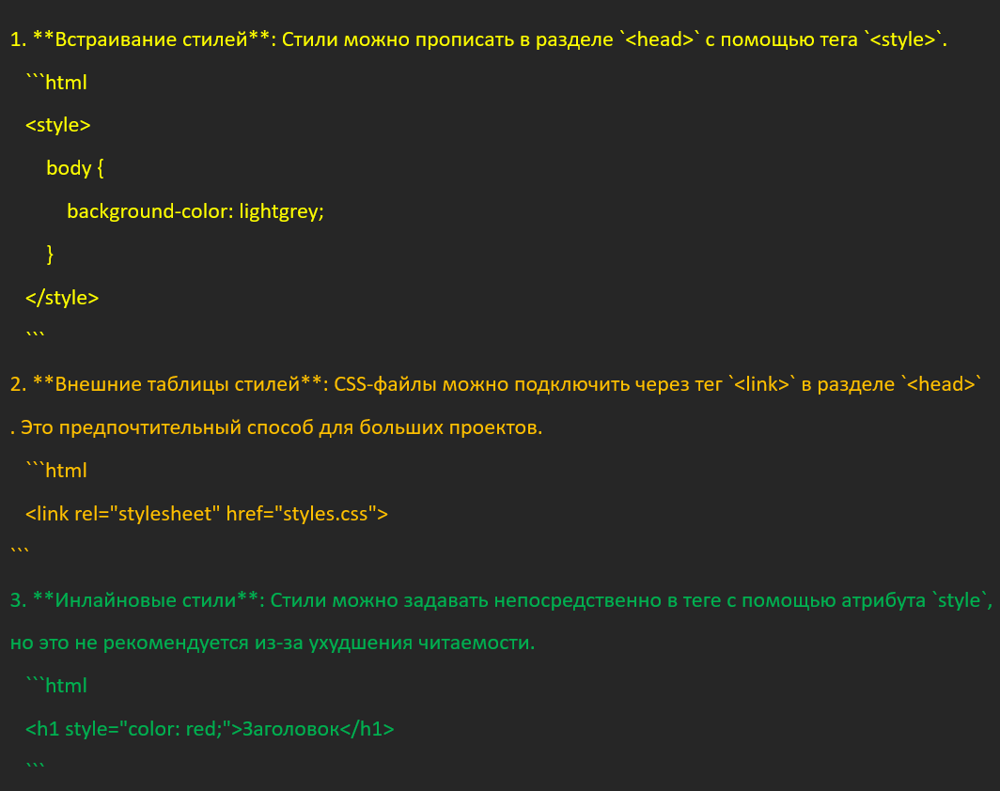
Основные концепции CSS
Селекторы
Селекторы помогают определять, к каким элементам применять стили. Существуют различные типы селекторов: - **По тегу**: `p` выделяет все параграфы. - **По классу**: `.classname` выделяет элементы с заданным классом. - **По идентификатору**: `#uniqueID` выделяет элемент с уникальным идентификатором. - **Комбинированные**: `div > p` выбирает все параграфы, находящиеся непосредственно внутри `div>`.
Каскадное поведение
CSS имеет каскадный принцип применения стилей, что означает, что более специфичные стили могут переопределить менее специфичные. При наличии конфликтующих стилей порядок применения важен: 1. Инлайновые стили 2. Встраиваемые стили 3. Внешние стили
Дизайн и макеты
Блочная модель CSS
Все элементы в HTML рассматриваются как блоки, и CSS управляет их размерами, отступами и позиционированием. Основные компоненты блочной модели: 1. **Content**: фактическое содержимое элемента. 2. **Padding**: внутренние отступы вокруг контента. 3. **Border**: граница вокруг элемента. 4. **Margin**: внешние отступы, отделяющие элемент от других элементов.
Flexbox и Grid
CSS предоставляет мощные инструменты для создания макетов. Flexbox и Grid позволяют легко управлять расположением и выравниванием элементов. - **Flexbox**: позволяет создавать однострочные макеты с гибким распределением пространства между элементами. - **Grid**: идеален для создания двумерных макетов с четкой сеткой. Пример использования Flexbox и Grid:
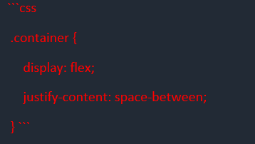
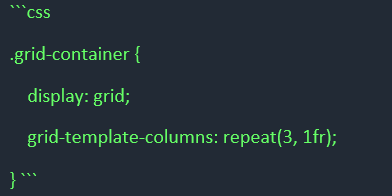
Адаптивный и отзывчивый дизайн
Медиазапросы
CSS позволяет использовать медиазапросы для создания адаптивного дизайна. Это означает, что стили могут меняться в зависимости от устройства, на котором отображается веб-страница. Пример использования медиазапроса:
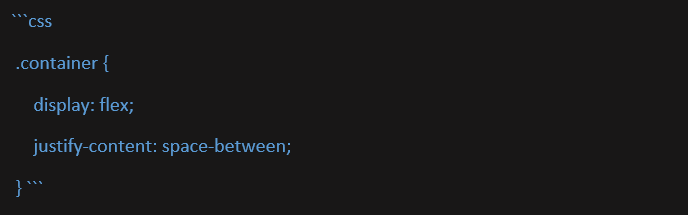
Это правило изменяет цвет фона на светлый синий, если ширина экрана меньше 600 пикселей.
Применение в практике
Адаптивный дизайн является важным аспектом современного веб-разработки. С учетом роста использования мобильных устройств, важно, чтобы веб-страницы выглядели хорошо не только на больших экранах, но и на смартфонах и планшетах.
Совместимость с браузерами
HTML и CSS могут по-разному поддерживаться различными браузерами. Это может приводить к несовместимости и проблемам при отображении сайтов. Советы по улучшению совместимости:
- Используйте префиксы для свойств, которые могут быть не поддерживаемы во всех браузерах. - Регулярно тестируйте-на нескольких браузерах.
Инструменты для разработки
Современные инструменты и редакторы делают разработку с использованием HTML и CSS более удобной. Популярные редакторы кода включают:
- **Visual Studio Code**: мощный редактор с поддержкой плагинов. - **Sublime Text**: легкий редактор с множеством функций. - **Atom**: редактор от GitHub с возможностью настройки.
Также доступны инструменты для отладки и проверки кода, такие как:
- **Chrome DevTools**: встроенные инструменты в браузере Chrome для отладки и тестирования CSS. - **Lint-инструменты**: такие как Stylelint для проверки правильности написанного CSS.
Заключение
HTML и CSS являются основополагающими технологиями веб-разработки. HTML формирует структуру, а CSS — это стиль. Разработчик должен с успехом использовать их вместе, чтобы создать современные адаптивные веб-приложения, которые обеспечивают отличный пользовательский опыт.
Современные тенденции в веб-разработке требуют от разработчиков понимания как HTML, так и CSS на глубоком уровне, чтобы эффективно создавать доступные и красивыми веб-сайты. С расширением возможностей и инструментов, работа с этими технологиями становится ещё более захватывающей и многогранной.
1. Определение структуры HTML-документа
DOCTYPE и корневой элемент:
Начинаем с объявления !DOCTYPE html>, которое указывает браузеру, что это HTML5-документ. Корневой элемент html> содержит атрибут lang="en", указывающий, что язык контента — английский.
Метаданные:
Внутри тега head> добавляем метатеги:
Заголовок страницы:
Устанавливаем заголовок страницы с помощью title> Document /title>, который отображается на вкладке браузера.
Подключение стилей:
Используем link rel="stylesheet" href="style.css"> для подключения внешнего CSS-файла, который будет управлять стилями страницы.
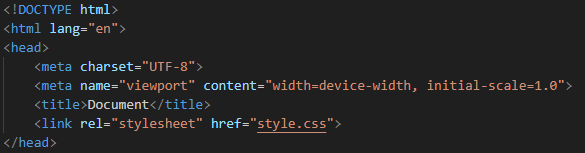
2. Создание заголовка (header)
Элементы навигации:
Внутри header> размещаем несколько элементов, включая кнопки для перехода на главные разделы сайта:
Поисковая строка:
Добавляем поле ввода (input type="text" placeholder="Поиск">), чтобы пользователи могли искать информацию на сайте.
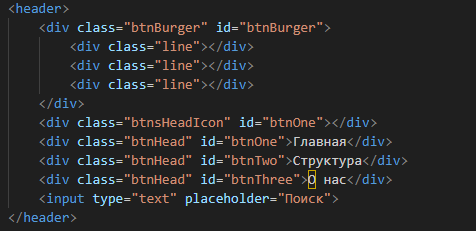
3. Создание мобильного меню
Скрытое меню:
Создаем div class="menuBurger" id="box">, который будет содержать список элементов меню. Этот div> будет скрыт по умолчанию и появится при нажатии на кнопку бургера. Элементы меню представлены в виде списка (ul>), где каждый элемент меню (li>) соответствует пункту навигации.
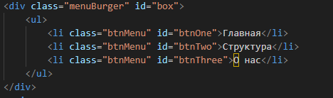
4. Основной контент (main)
Структура контента:
Внутри main> добавляем различные блоки с контентом, используя div> для разделов. Каждый блок содержит:
Изображения:
Вставляем изображения с помощью тега img>, чтобы визуально поддержать текстовый контент и сделать страницу более привлекательной.
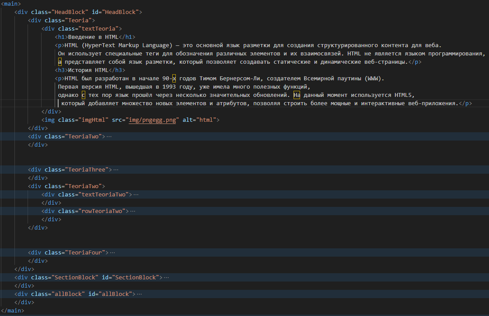
5. Использование семантических тегов
Семантические теги:
Применяем семантические теги, такие как header>, main> и footer>, чтобы четко обозначить разные части страницы. Это улучшает доступность и SEO, позволяя поисковым системам и вспомогательным технологиям лучше понимать структуру документа.
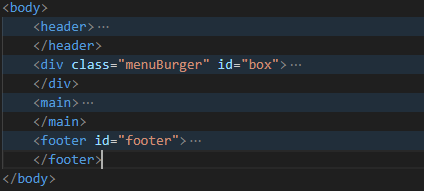
6. Создание подвала (footer)
Контактная информация:
В footer> добавляем информацию о новостном канале, например, заголовок "Наш новостной канал:" и ссылку на социальные сети, такие как Telegram. Используем тег a> для создания кликабельной ссылки, а также img> для отображения иконки
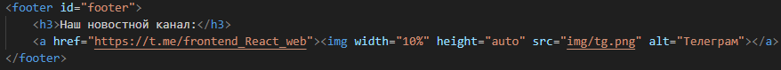
7. Стилизация с помощью CSS
Подключение стилей:
Все стили определяются в отдельном CSS-файле, что позволяет управлять внешним видом страницы, не перегружая HTML-код.
Flexbox и медиа-запросы:
Используем Flexbox для расположения элементов в заголовке и других частях страницы, что позволяет легко управлять выравниванием и распределением пространства. Медиа-запросы в CSS обеспечивают адаптивный дизайн, позволяя стилям изменяться в зависимости от ширины экрана устройства.
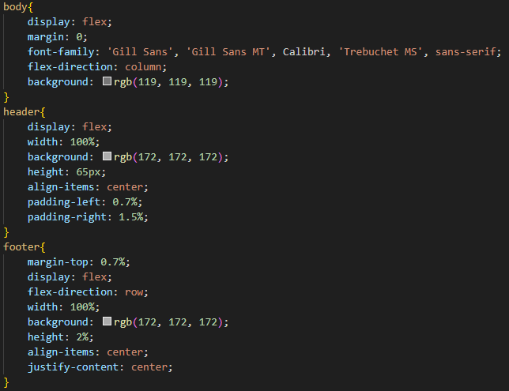
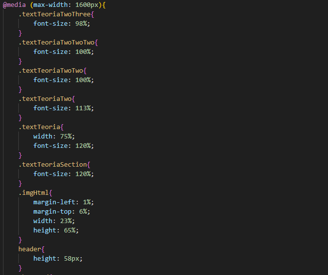
8. Завершение структуры
Завершение документа:
Закрываем все открытые теги и завершаем документ с помощью /html>. Это важно для корректного завершения HTML-документа и предотвращения возможных ошибок при его отображении в браузере.